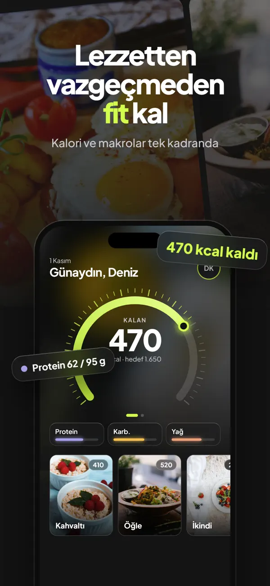
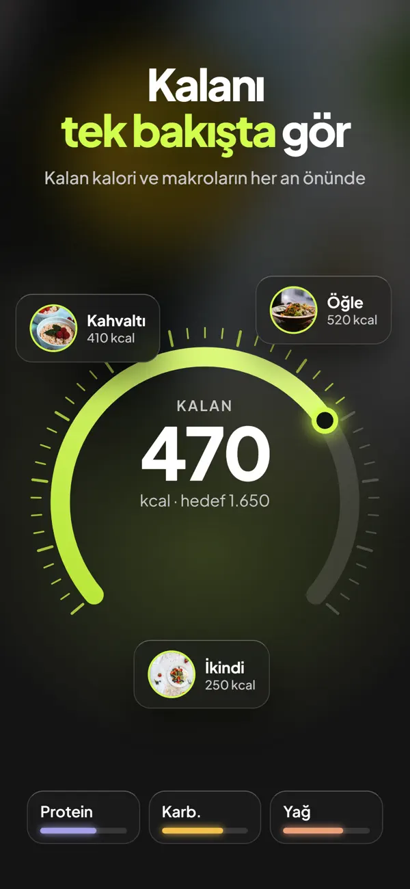
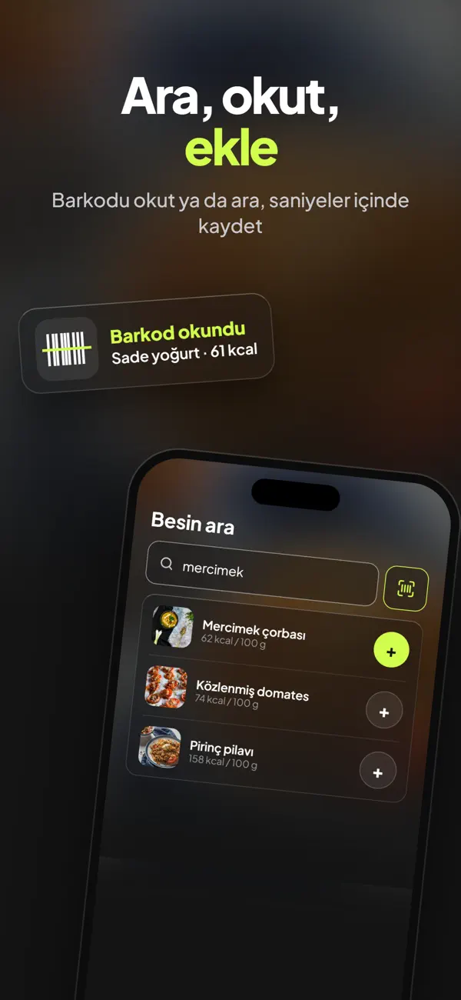
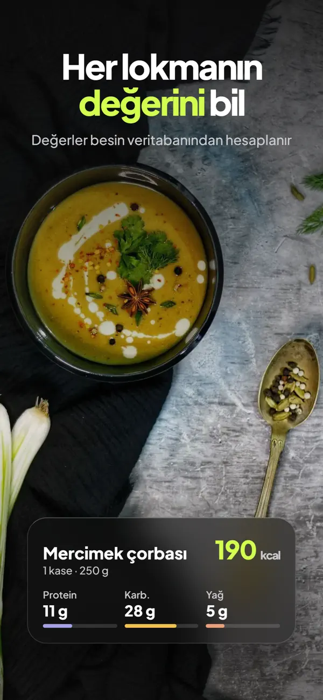

Tadından vazgeçmeden formda kal.
Barkodu okut kadran anında dönsün, tabağının fotoğrafını çek AI kalorisini hesaplasın, mutfağındaki malzemelerle sana özel tarifler pişir ve 7 günlük kişisel AI beslenme planınla hedefine ulaş.
44 çentikli canlı Kadran ile kalan kalori ve makrolarını tek bakışta takip et
Barkod okutma, tabak fotoğrafı çekme (AI) veya sesle saniyeler içinde öğün kaydı
Evdeki kiler malzemelerine ve kalan kalorine %100 uyumlu akıllı tarifler & sesli pişirme
Boy, kilo, hedef ve alerji profiline özel 7 günlük kişisel AI menü ve alışveriş listesi
Su cetveli, aktif dakika sayacı, kilo grafiği ve sen onaylamadan değişmeyen adaptif hedef
Günlük seri (streak), rozetler ve haftalık meydan okumalarla yüksek motivasyon




TadFit tıbbi bir cihaz değildir ve tıbbi tavsiyenin yerini tutmaz.
Ana sayfaya dön